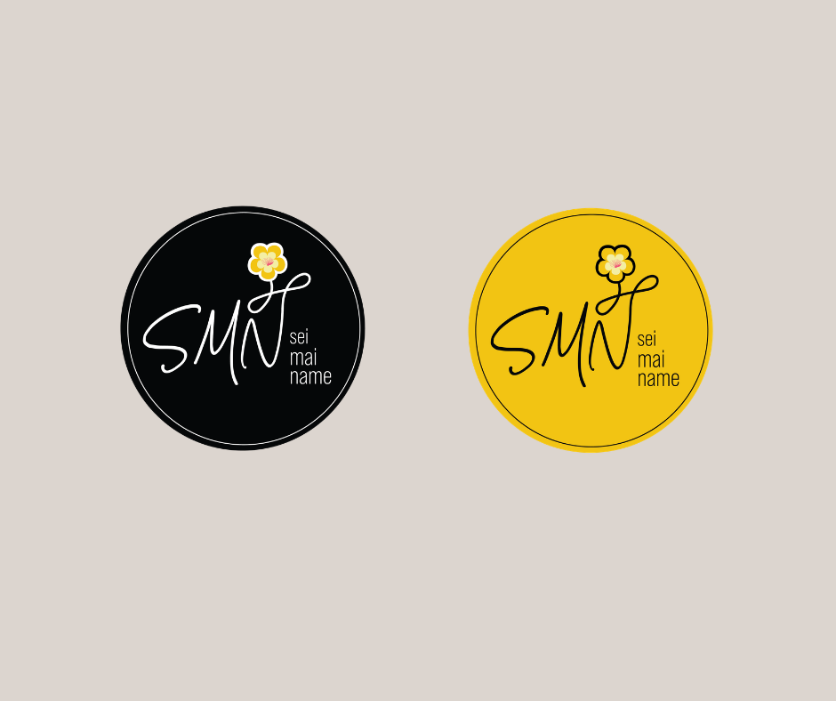

Website / Mobile First
Sei Mai Name needed more than a visual identity — it needed a digital presence that could introduce the venue before guests ever arrived. I designed and built a website that translated the atmosphere of the bar into a clean, mobile-friendly experience, with a strong focus on discoverability, visual mood, and clear booking calls to action. Since hospitality audiences often first engage on their phones, the mobile experience was treated as a priority rather than a reduced version of the desktop site.
The visual direction used deep charcoal, warm gold, and cinematic food imagery to reflect the candlelit, intimate energy of the venue. This gave the site a stronger emotional presence while still keeping the structure simple and easy to navigate. The result was a more credible online identity that made it easier for potential customers to understand the brand, explore the venue, and move toward booking.

Logo Identity
The Sei Mai Name identity was built around a circular seal logo that combined the SMN initials with a floral motif, creating a mark that felt distinctive, warm, and suitable for both digital and physical applications. The circular format gave the brand a sense of presence and versatility, allowing it to work across signage, menus, social media, and other branded touchpoints without losing recognition.
To make the identity more flexible, I developed logo variations for light and dark backgrounds, ensuring the mark remained legible and consistent across different environments. Showing the logo both as a standalone system and in-context on signage helps communicate not just what the logo looks like, but how it functions as part of a real hospitality brand.



Social Media Presence
Because Instagram plays such a major role in how hospitality venues are discovered, social media was treated as a core part of the brand rollout. I created a visual direction for the feed that balanced food photography, promotional graphics, and branded announcements, helping Sei Mai Name feel active, recognisable, and visually cohesive online.
The goal was to create a feed that felt inviting and atmospheric while still being structured enough to support marketing moments such as launches, promotions, and event-driven content. This gave the business a stronger digital presence and helped extend the brand experience beyond the venue itself.